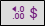

Insert a custom table
Custom tables allow you to create advanced analyzes where you can define profiles that will act on the variables to be displayed in your lines and columns. Profiles can be defined directly from your variables, but also with the help of scripts.
In order to create a custom table, pass the cursor over the button for adding a new element ( Button ) and select Custom table.
After clicking, a dialog opens, from which you can customize your table.
At the table's top, there is a horizontal bar containing several buttons that allow you to:

-
Undo / redo a modification;
-
Insert a column on the left/right and insert a line above/below;
-
Delete selected rows/columns;
-
Delete profiles;
-
Set up a unit (e.g €) for an entire line or column and define the number of decimals possible;
-
Manage the calculation options;
-
Display bar graphs in cells (by setting limit values if necessary);
-
Move the columns to the left/right and move the rows up/down;
-
Add header rows, title rows, and merge cells;
-
Format row / column headers (change font, size, color etc.);
-
Pre-fill the rows or columns according to the modalities of your variables using the "Add pre-filled elements" button (create as many rows/columns as there are modalities of a variables).
NOTE: By pre-filling in rows or columns according to modalities, a filter is automatically applied to each row/column according to the displayed modality.
Cells
You can apply the cell contents to other cells in the same row or column by selecting the cell, to do so, select the cell:

Click on the image above for an animated preview
To modify the cell content, you have to double-click on it to enter text or click on the button that appears to enter a script.
NOTE: The calculation inserted must be single-line.
You will also find information on the usable elements, detailing the function, the syntax and an example, to better understand the characteristics of what is available to you:

Your survey variables are also available on the right side of the editing area.
Learn more about the calculation formulas.
NOTE: If you want to copy the same formula to several successive cells, just write it in lowercase.
Click on the image above for an animated preview
Profiles
To define a profile, simply click on the "define a profile"  icon in each row and column header.
icon in each row and column header.
When a profile is already completed and valid, you can always click on the icon  again to modify it or click to delete it.
again to modify it or click to delete it.
Profiles allow you to add conditions to the cell content display.
In the editing area, you can choose to define profiles as "multi-criteria", using the variables from the survey, or as "expression”, where you define your criteria more precisely yourself. In the latter case, it could be for example a question of displaying the object only if the average of the variable is greater than 5, so you would have to write "[Satisfaction].average > 5".
When you define a profile in "multi-criteria", you can define as many conditions as you want by adding additional conditions using the button with the plus sign . In the same way, you can delete a condition using the button with the cross sign .
.
You can also delete your profile at the top right, still inside the profile editor.
Rows and columns
You can insert blank rows and columns using the buttons at the top of the window .
In the same way, you can add pre-filled rows and columns according to the modalities of your variables, using the "Add pre-filled elements" button .
Choose the type of variable and then the desired variable:
-
 Static variable
Static variable
The rows/columns of the table contain the terms/values of the variable selected when the table was created.
These elements remain fixed, even if new modalities appear later.
-
Dynamic Variable
The rows/columns of the table contain the terms/values of the selected variable. If new modalities/values are recorded over time, new rows/columns will be created automatically.
You want to create a customized table that displays the results by year, with the ‘Year’ variable as a column.
By choosing ‘Dynamic variable’, the table displays the following columns, for example: 2023 / 2024. The following year, respondents complete the questionnaire in 2025. The ‘Year’ variable records this new value, and a new ‘2025’ column is automatically added to the table, without any manual intervention.This option is particularly useful for tracking data that evolves over time, such as years, months, categories that are added gradually, etc.

You will find several possible actions on each column or row header:
-
Add a unit and define the number of decimals to be used by clicking on the

button. -
Do not apply decimals to integer values.

-
Move the columns to the left/right and move the rows up/down using the
 buttons.
buttons. -
Add header rows, title rows, and merge cells using the
 buttons.
buttons. -
Delete/move the column/row.
-
Enlarge the size of a row/column in editing to view the entire cell content.
-
Display bar graphs in cells (by setting limit values if necessary), by clicking on the button .
-
Edit font, size, color, text alignment etc.

Once the table is set up, you can later display variations, apply conditional formatting, perform a custom sort and display a chart to illustrate it.
Below are examples of custom tables:
EXAMPLE 1
In this example we will show the average expenses and the most visited place of stay according to the activity practiced.

-
Pre-fill the rows automatically according to the modalities of the Activities question.
-
Insert the formula "=[Total_expenses].mean" in the cells of the "Expenses" column to obtain the average expenses.
-
Insert the formula "=[Location_of_stay].mode]" in the cells of the "Location of stay" column to obtain the most visited place of stay.
-
Add the unit "€" in the "Expenses".


 EXAMPLE 2
EXAMPLE 2
In this example we will display an Importance/Performance analysis created with a custom table.

-
Enter manually the title of the rows and colums.
-
Insert the formula "=[V1].mean" in the cells of the "performance" column (V1 refers to variable number 1), so you have to add the right variable name/number for each row. In this example we have 4 rows (4 different variables):
-
1st line: =[accommodation_expenses].Mean
-
2nd line: =[food_expenses].Mean
-
3rd line: =[restaurant_expenses].Mean
-
4th line: =[leisure_expenses].Mean
-
-
Insert the formula to obtain the correlation between the expenses variables (accommodation, food, restaurant, leisure) and total expenses in the cells of the "importance" column:
-
1st line: =[accommodation_expenses].Correlation(“[Total_expenses]”)
-
2nd line: =[food_expenses].Correlation(“[Total_expenses]”)
-
3rd line: =[restaurant_expenses].Correlation(“[Total_expenses]”)
-
4th line: =[leisure_expenses].Correlation(“[Total_expenses]”)
-
-
Display the "map" chart.

 EXAMPLE 3
EXAMPLE 3
In this example we will set up a regions tracking by displaying the respondents' number, the number of persons interrogated, the return rate and the satisfaction score:

We will display on the first line the overall results and then the results by region. In order to do so:
-
Pre-fill in the lines automatically according to the modalities of the "Region" question.
-
Manually fill in the titles of the 4 columns: respondents’ number, number of persons interrogated, return rate and satisfaction score.
-
Place the formula “=NumberOfObservations” in the cells of the column “Respondents’ number”.
-
The number of persons interrogated is data that we will recover from an Excel file by making a copy paste.
-
The return rate will be calculated by entering the following formula:
For the first line: "=B2/C2*100" : Cell B2 divided by cell C2 multiplied by 100, you just have to apply the formula on the other cells.
Click on the image above for an animated preview
-
Fill in the formula "=[Satisfaction].Mean" in the cells of the “Satisfaction Score” column.

 EXAMPLE 4
EXAMPLE 4
We want to display the evolution of satisfaction by year (the grades for 2018 and 2019 will be copied from an excel file).

-
Manually fill in the row name and column headings and notes for the years 2018 and 2019.
-
Set up the calculation formula "= [Satisfaction. Mean]" in order to calculate the average score for the year 2020.
-
Validate the construction of the table and then display the graph.
 EXAMPLE 5
EXAMPLE 5
For each type of accommodation (hotel, camping, rental/gite, family/friends) we would like to have two columns for the Satisfaction question with respectively:
-
The number of satisfied respondents (having answered "8" "9" "10");
-
Average satisfaction (calculated with the scale defined in the question).

Setting up:
-
Pre-fill the rows automatically according to the modalities of the Type of accommodation question.
-
Add a title for the two columns: Satisfied respondents/Average satisfaction.
-
Define a multi-criteria profile for the column Satisfied respondents as follows: Satisfaction among "8, 9, and 10".
-
Insert the formula =[Satisfaction].Frequency in the column cells of Satisfied respondents and the formula =[Satisfaction].Mean in the column cells of Average satisfaction.

 EXAMPLE 6
EXAMPLE 6
We would like to have a gender repartition (Man/Woman) according to the age of the respondents (3 profiles set up for each age group).

Setting up:
-
Pre-fill the columns automatically according to the modalities of the Gender question.
-
Fill in the names of the three profiles (3 rows) and then define them according to age groups (Age question).
-
Insert the formula [Gender].Frequency in the column cells of “Man/Woman”.